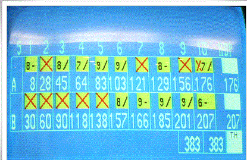

<볼링 규칙>
볼링은 한 게임이 총 10개의 프레임으로 구성 되있다.
프레임 1개당 공을 두번 굴리고
쓰러진 핀의 합산으로 점수가 나온다.
핀 1개당 1점이다.
이때 한번 공을 굴려 핀 10개를 모두 쓰러뜨리면
스트라이크로
기본 10점에 차후 두번의 투구에서 핀이 쓰러진 만큼 점수를 더 얻게된다.
공을 두번 굴려 핀 10개를 쓰러뜨리면
스페어로 기본 10점에
다음 한번의 투구에서 핀이 쓰러진만큼 점수를 더 얻게된다.
마지막 10프레임의 경우 초구에 스트라이크를 치면
보너스 투구가
2번 더 주어진다. 스페어 처리 할 경우 한번의 보너스 투구가 주어진다.

/는 스페어 X는 스트라이크